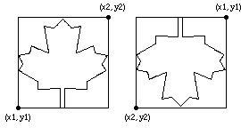

drawmapleleaf (x1, y1, x2, y2, Color : int)
The drawmapleleaf procedure is used to draw a maple leaf on the screen bounded by a rectangle described by the bottom left and top right corners of (x1, y1) to (x2, y2) using the specified Color. If y1 is greater than y2, then the maple leaf is drawn upside down.

This program will draw two maple leaves beside each other. The first will be in color 1 and the second maple leaf will be upside down and in color 2.
setscreen ("graphics")
drawmapleleaf (0, 0, 100, 100, 1)
drawmapleleaf (150, 100, 250, 0, 2)
The drawmapleleaf procedure is useful for drawing the Canadian flag. The meaning of the Color number depends on the current palette. See the palette statement. The screen should be in a "graphics" mode. See the setscreen procedure for details. If the screen is not in a "graphics" mode, it will automatically be set to "graphics" mode.
setscreen.html, maxx.html, maxy.html and the various draw… procedures.